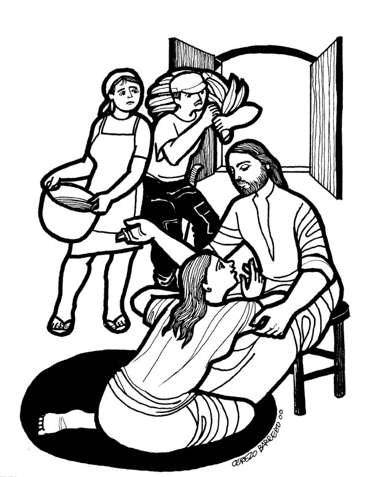

This Week:Amos 8:1-12 and Psalm 52 or Genesis 18:1-10a and Psalm 15, Colossians 1:15-28, Luke 10:38-42
Luke Misioneros Del Sagrado Corazón en el Perú
 Cerezo Barredo's weekly gospel illustration
Next week: Hosea 1:2-10 and Psalm 85 or Genesis 18:20-32 and Psalm 138 Colossians 2:6-15, (16-19) Luke 11:1-13